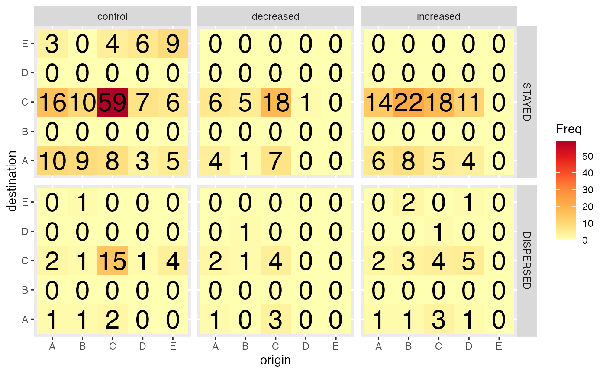
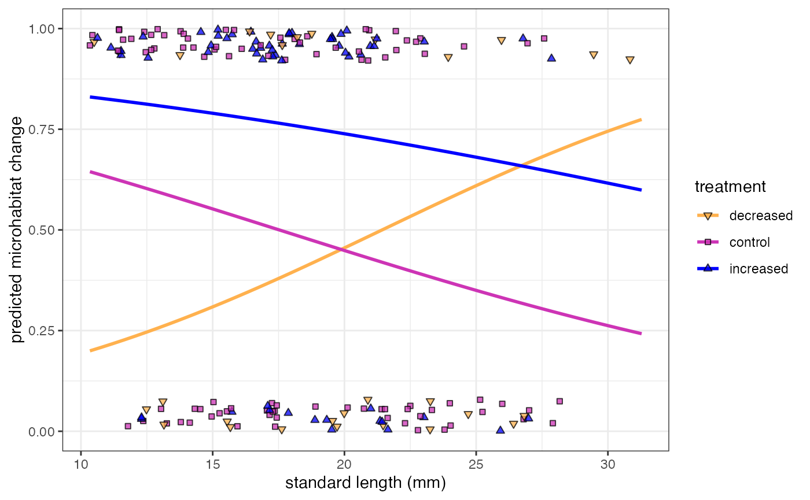

vignettes/DME-016_Dispersal_and_habitat_shift.Rmd
DME-016_Dispersal_and_habitat_shift.RmdHere we will analyse the effects of density on dispersal. Our hypothesis is that higher density will force more individuals to disperse, given the stronger competition over resources.
This vignette relies on previous vignettes (000, 010, 015) having run, since it builds upon the capture-recapture dataset we generated.
library(tidyverse)
library(ggpubr)
library(lme4)
library(stargazer)
library(magrittr)
# this vignette requires the package guppyDme to be installed. If the user wishes not to install the package, please comment out the "library(guppyDme)" line and run instead the lines commented out below
#### If you have the guppyDme package installed
# loading package
library(guppyDme)
# # If you do NOT wish to install the guppyDme package, please uncomment and run the following two lines of code, adding the package functions to the Global Environment and loading the data
# source(file.path(here::here(), "R", "package_functions.R"))
# here we load the capture-recapture dataset.
cr_data <- readRDS(file.path(here::here(), "vignettes", "DME_cr_data.rds"))Let’s have a look at the fluxes of dispersal between different treatments.
# here all individuals
mat <- cr_data %>%
filter(moved) %>%
select(pool_treat_1, pool_treat_0) %>%
table() %T>%
print %>%
as.data.frame()## pool_treat_0
## pool_treat_1 control decreased increased natural
## control 1 1 19 7
## decreased 7 0 17 14
## increased 14 8 1 3
## natural 10 4 22 15
ggplot(mat, aes(x = pool_treat_0, y = pool_treat_1, fill = Freq)) +
geom_tile() +
scale_fill_distiller(palette = "YlOrRd", direction = 2) +
ylab("destination") + xlab("origin") +
geom_text(aes(label=Freq), size = 8) +
ggtitle("All individuals")This graphic representation includes individuals from the extra-limital reaches introduced into the increased-density pool. Let’s have a look at “resident” individuals only. Also, We’ll be pooling together “control” and “natural” areas since density should be at the equilibrium in both.
mat1 <- cr_data %>%
filter(moved, treatment %in% c("C", "I", "D")) %>%
mutate(pool_treat_1 = ifelse(pool_treat_1=="natural", "control", pool_treat_1)) %>%
select(pool_treat_1, pool_treat_0) %>%
table() %>%
as.data.frame()
ggplot(mat1, aes(x = pool_treat_0, y = pool_treat_1, fill = Freq)) +
geom_tile() +
scale_fill_distiller(palette = "YlOrRd", direction = 2) +
ylab("destination") + xlab("origin") +
geom_text(aes(label=Freq), size = 8) +
ggtitle("Extralimital excluded")To test for the effect of density on dispersal we’ll run GLMM with
binomial error distribution. We will include interval (time) as an
offset, which in binomial models needs not be in the log
scale (see: here
). The model with a non-logged offset throws an error, so
we will have interval as a covariate for now.
First, we will run the model including density as a continuous factor, together with initial standard length and sex-stage.
# it might be best to rescale the variables to improve model convergence
# I am also only selecting resident individuals (excluding extralimital
# in increased density pools)
cr_data %<>%
filter(treatment %in% c("C", "D", "I")) %>%
mutate(SL_0s = scale(SL_0),
interval = scale(as.numeric(interval)),
density_factor = density_factor - 1)
d0 <- glmer(moved ~ SL_0s*sex_stage_0*density_factor + (1|streamID),
family = "binomial",
offset = interval,
control = glmerControl(optimizer = "bobyqa",
optCtrl = list(maxfun = 100000)),
na.action = na.omit,
data = cr_data)
# remove the three way (not significant at the .10 level)
d1 <- glmer(moved ~ (SL_0s+sex_stage_0+density_factor)^2 + (1|streamID),
family = "binomial",
offset = interval,
control = glmerControl(optimizer = "bobyqa",
optCtrl = list(maxfun = 100000)),
na.action = na.omit,
data = cr_data)
# remove size x density
d2 <- glmer(moved ~ SL_0s*sex_stage_0+sex_stage_0*density_factor + (1|streamID),
family = "binomial",
offset = interval,
control = glmerControl(optimizer = "bobyqa",
optCtrl = list(maxfun = 100000)),
na.action = na.omit,
data = cr_data)
# remove sex x density
d3 <- glmer(moved ~ SL_0s*sex_stage_0+density_factor + (1|streamID),
family = "binomial",
offset = interval,
control = glmerControl(optimizer = "bobyqa",
optCtrl = list(maxfun = 100000)),
na.action = na.omit,
data = cr_data)
# remove density
d4 <- glmer(moved ~ SL_0s*sex_stage_0 + (1|streamID),
family = "binomial",
offset = interval,
control = glmerControl(optimizer = "bobyqa",
optCtrl = list(maxfun = 100000)),
na.action = na.omit,
data = cr_data)
stargazer::stargazer(d0, d1, d2, d3, d4,
type = "html", report = ('vcp*'),
title = "Model selection (continous density)",
dep.var.labels = 'Probability to disperse',
column.sep.width = "10pt",
omit.stat = c("bic"),
star.char = c('.', '*', '**'))| Dependent variable: | |||||
| Probability to disperse | |||||
| (1) | (2) | (3) | (4) | (5) | |
| SL_0s | -0.668 | -0.588 | -0.571 | -0.568 | -0.567 |
| p = 0.026* | p = 0.033* | p = 0.032* | p = 0.035* | p = 0.035* | |
| sex_stage_0I | 0.727 | 0.564 | 0.674 | 0.755 | 0.748 |
| p = 0.176 | p = 0.318 | p = 0.212 | p = 0.156 | p = 0.159 | |
| sex_stage_0M | 2.511 | 2.257 | 2.308 | 2.041 | 2.055 |
| p = 0.003** | p = 0.001** | p = 0.001** | p = 0.0005** | p = 0.0005** | |
| density_factor | -1.589 | -0.989 | -0.418 | 0.148 | |
| p = 0.068. | p = 0.214 | p = 0.528 | p = 0.747 | ||
| SL_0s:sex_stage_0I | 1.670 | 1.373 | 1.474 | 1.422 | 1.419 |
| p = 0.005** | p = 0.019* | p = 0.010** | p = 0.012* | p = 0.012* | |
| SL_0s:sex_stage_0M | 2.744 | 1.321 | 1.535 | 1.981 | 1.943 |
| p = 0.223 | p = 0.409 | p = 0.338 | p = 0.195 | p = 0.203 | |
| SL_0s:density_factor | 2.192 | 1.036 | |||
| p = 0.029* | p = 0.180 | ||||
| sex_stage_0I:density_factor | 2.005 | 3.024 | 1.602 | ||
| p = 0.187 | p = 0.038* | p = 0.101 | |||
| sex_stage_0M:density_factor | -1.195 | -0.343 | -1.154 | ||
| p = 0.628 | p = 0.842 | p = 0.476 | |||
| SL_0s:sex_stage_0I:density_factor | -3.174 | ||||
| p = 0.053. | |||||
| SL_0s:sex_stage_0M:density_factor | -7.355 | ||||
| p = 0.253 | |||||
| Constant | -1.459 | -1.448 | -1.472 | -1.501 | -1.493 |
| p = 0.076. | p = 0.078. | p = 0.073. | p = 0.063. | p = 0.064. | |
| Observations | 362 | 362 | 362 | 362 | 362 |
| Log Likelihood | -163.488 | -165.888 | -166.838 | -168.987 | -169.039 |
| Akaike Inf. Crit. | 352.976 | 353.775 | 353.676 | 353.973 | 352.077 |
| Note: | p<0.1; p<0.05; p<0.01 | ||||
Since there might be some asymmetry in the way density affects dispersal, we will also try to fit a model with treatment as a categorical variable, and the same structure of covariates.
d1b <- glmer(moved ~ SL_0s*sex_stage_0*treatment + (1|streamID),
family = "binomial",
offset = interval,
na.action = na.omit,
data = cr_data)## Warning in checkConv(attr(opt, "derivs"), opt$par, ctrl = control$checkConv, :
## unable to evaluate scaled gradient## Warning in checkConv(attr(opt, "derivs"), opt$par, ctrl = control$checkConv, :
## Model failed to converge: degenerate Hessian with 1 negative eigenvalues
# the model throws some convergence warnings
d2b <- glmer(moved ~ (SL_0s+sex_stage_0+treatment)^2 + (1|streamID),
family = "binomial",
offset = interval,
na.action = na.omit,
data = cr_data)## Warning in checkConv(attr(opt, "derivs"), opt$par, ctrl = control$checkConv, : Model is nearly unidentifiable: large eigenvalue ratio
## - Rescale variables?
d3b <- glmer(moved ~ SL_0s*sex_stage_0+SL_0s*treatment + (1|streamID),
family = "binomial",
offset = interval,
na.action = na.omit,
data = cr_data)
d4b <- glmer(moved ~ SL_0s*sex_stage_0+treatment + (1|streamID),
family = "binomial",
offset = interval,
na.action = na.omit,
data = cr_data)
d5b <- glmer(moved ~ SL_0s*sex_stage_0 + (1|streamID),
family = "binomial",
offset = interval,
na.action = na.omit,
data = cr_data)
# displaying model comparison (the first two models don't converge and are not reported)
stargazer::stargazer(d3b, d4b, d5b,
type = "html", report = ('vcp*'),
title = "Model selection (factorial density)",
dep.var.labels = 'Probability to disperse',
column.sep.width = "10pt",
omit.stat = c("bic"),
star.char = c('.', '*', '**'))| Dependent variable: | |||
| Probability to disperse | |||
| (1) | (2) | (3) | |
| SL_0s | -0.319 | -0.589 | -0.567 |
| p = 0.288 | p = 0.029* | p = 0.035* | |
| sex_stage_0I | 0.754 | 0.717 | 0.748 |
| p = 0.159 | p = 0.179 | p = 0.159 | |
| sex_stage_0M | 2.031 | 2.014 | 2.055 |
| p = 0.001** | p = 0.001** | p = 0.0005** | |
| treatmentD | 0.317 | 0.433 | |
| p = 0.456 | p = 0.284 | ||
| treatmentI | 0.082 | 0.178 | |
| p = 0.803 | p = 0.576 | ||
| SL_0s:sex_stage_0I | 1.499 | 1.412 | 1.419 |
| p = 0.010** | p = 0.013* | p = 0.012* | |
| SL_0s:sex_stage_0M | 2.034 | 1.881 | 1.943 |
| p = 0.192 | p = 0.222 | p = 0.203 | |
| SL_0s:treatmentD | -0.633 | ||
| p = 0.186 | |||
| SL_0s:treatmentI | -0.576 | ||
| p = 0.166 | |||
| Constant | -1.561 | -1.614 | -1.493 |
| p = 0.057. | p = 0.048* | p = 0.064. | |
| Observations | 362 | 362 | 362 |
| Log Likelihood | -166.981 | -168.451 | -169.039 |
| Akaike Inf. Crit. | 355.962 | 354.901 | 352.077 |
| Note: | p<0.1; p<0.05; p<0.01 | ||
The two resulting models, from our model simplification approach, are the same whether treatment (density) is included as a continuous or categorical variable, so there is no need to compare AIC values.
summary(d4)## Generalized linear mixed model fit by maximum likelihood (Laplace
## Approximation) [glmerMod]
## Family: binomial ( logit )
## Formula: moved ~ SL_0s * sex_stage_0 + (1 | streamID)
## Data: cr_data
## Offset: interval
## Control: glmerControl(optimizer = "bobyqa", optCtrl = list(maxfun = 1e+05))
##
## AIC BIC logLik deviance df.resid
## 352.1 379.3 -169.0 338.1 355
##
## Scaled residuals:
## Min 1Q Median 3Q Max
## -1.3415 -0.4856 -0.4066 -0.2703 8.7115
##
## Random effects:
## Groups Name Variance Std.Dev.
## streamID (Intercept) 1.774 1.332
## Number of obs: 362, groups: streamID, 3
##
## Fixed effects:
## Estimate Std. Error z value Pr(>|z|)
## (Intercept) -1.4933 0.8058 -1.853 0.06385 .
## SL_0s -0.5669 0.2680 -2.115 0.03440 *
## sex_stage_0I 0.7483 0.5307 1.410 0.15851
## sex_stage_0M 2.0550 0.5826 3.527 0.00042 ***
## SL_0s:sex_stage_0I 1.4186 0.5632 2.519 0.01177 *
## SL_0s:sex_stage_0M 1.9429 1.5247 1.274 0.20257
## ---
## Signif. codes: 0 '***' 0.001 '**' 0.01 '*' 0.05 '.' 0.1 ' ' 1
##
## Correlation of Fixed Effects:
## (Intr) SL_0s sx__0I sx__0M SL_0:__0I
## SL_0s -0.139
## sex_stag_0I -0.133 0.209
## sex_stag_0M -0.123 0.183 0.178
## SL_0s:s__0I 0.061 -0.471 0.590 -0.067
## SL_0s:s__0M 0.012 -0.160 -0.024 0.648 0.089
# quick plot to have a visual idea
mean_dispersal <- cr_data %>%
group_by(streamID, treatment, density_factor) %>%
summarize(p_mov = mean(moved, na.rm = T),
st_dev = sd(moved, na.rm = T),
n = n()) %>%
mutate(se = st_dev/sqrt(n))## `summarise()` has grouped output by 'streamID', 'treatment'. You can override
## using the `.groups` argument.
# then against the continuous density
ggplot(mean_dispersal, aes(x = density_factor, y = p_mov, col = streamID)) +
geom_point(size = 4, position = position_dodge(0.1)) +
geom_errorbar(aes(ymin=p_mov - se*2, ymax=p_mov + se*2),
position = position_dodge(0.1), width=0) +
ylim(0, 1) +
labs(x = "density multiplier", y = "Dispersal probability", color = "Stream") +
scale_color_manual(values=c("#DAA323", "#691E92", "#199958")) +
ggtitle("Dispersal probability as a function of density") +
theme_bw()We can dive a little deeper into how dispersal probability changes
based on size and sex and density. The plot below shows the predicted
dispersal probability as a function of standard length (in mm),
marginalized over the random effect stream_ID, for females,
males, and immature individuals separately. The predictions are bound to
the appropriate parameter space, spanning from the minimum and maximum
recorded size for each of the three sex-stage categories.
# generating newdata to predict probability to disperse
sls <- modelr::seq_range(cr_data$SL_0, n = 50)
sxs <- unique(cr_data$sex_stage_0)
newdata <- expand.grid(SL_0 = sls,
sex_stage_0 = sxs)
newdata_disp <- newdata %>%
mutate(SL_0s = (SL_0 - attr(cr_data$SL_0s, "scaled:center"))/
attr(cr_data$SL_0s, "scaled:scale")) %>%
add_column(pred_mov = plogis(predict(d4, newdata = ., re.form = ~0))) %>%
mutate(sex_stage = factor(sex_stage_0, levels = c("I", "M", "F"))) %>%
filter((sex_stage == "M" &
in_range(SL_0, cr_data %>% filter(sex_stage_0 == "M") %>% pull (SL_0))) |
(sex_stage == "I" &
in_range(SL_0, cr_data %>% filter(sex_stage_0 == "I") %>% pull (SL_0))) |
(sex_stage == "F" &
in_range(SL_0, cr_data %>% filter(sex_stage_0 == "F") %>% pull (SL_0)))) %>%
mutate(sex = plyr::mapvalues(sex_stage,
c("I", "M", "F"),
c("immature", "males", "females")))
# creating new variable to uniform color
cr_data %<>%
mutate(sex_lett =plyr::mapvalues(sex_stage_0,
c("I", "M", "F"),
c("immature", "males", "females")))
# extracting model matrix from selected model and newdata
# sourced here(https://stackoverflow.com/questions/53255211/plotting-random-effects-for-a-binomial-glmer-in-ggplot)
Xmat <- model.matrix(~SL_0s * sex_stage_0, newdata_disp)
# extracting fixed effect vector
fixest <- fixef(d4)
# calculating predicted values
fit <- as.vector(fixest %*% t(Xmat))
# calculating the standard error each estimates
SE <- sqrt(diag(Xmat %*% vcov(d4) %*% t(Xmat)))
# binomial link function
linkinv <- binomial()$linkinv
# adding CI to newdata
newdata_disp %<>%
add_column(fitted = linkinv(fit),
lower = linkinv(fit - SE),
upper = linkinv(fit + SE))
pd <- ggplot(newdata_disp, aes(x = SL_0, y = fitted, colour = sex)) +
geom_line() +
geom_ribbon(aes(ymin = lower, ymax = upper, fill = sex),
color = "transparent", alpha = 0.5) +
geom_point(data = cr_data, aes(x = SL_0, y = as.numeric(moved),
colour = factor(sex_lett, levels = c("immature", "males", "females"))), alpha = 0.5,
position = position_jitter(w = 0, h = 0.05)) +
scale_colour_manual(values = c("#1E88E5", "#FFC107", "#004D40")) +
scale_fill_manual(values = c("#1E88E5", "#FFC107", "#004D40")) +
xlab("Standard length (mm)") +
ylab("Dispersal probability") +
theme_bw()
pd
# saving figure
dir.create(file.path(here::here(), "vignettes", "figures"))## Warning in dir.create(file.path(here::here(), "vignettes", "figures")):
## '/Users/sebastianodebona/Documents/Research/R
## packages/guppyDME/vignettes/figures' already exists
jpeg(file.path(here::here(), "vignettes", "figures", "dispersal_p_by_sex.jpeg"),
width = 7, height = 5, units = "in", res = 400)
pd
dev.off()## agg_png
## 2Again, let’s first visualize what type of habitat change we observe in the three different pools, among individuals that stayed and left the pool.
mat <- cr_data %>%
filter(treatment %in% c("C", "D", "I")) %>%
select(habitat_0, habitat_1, treatment, moved) %>%
table() %T>%
print %>%
as.data.frame()## , , treatment = C, moved = FALSE
##
## habitat_1
## habitat_0 A B C D E
## A 10 0 16 0 3
## B 9 0 10 0 0
## C 8 0 59 0 4
## D 3 0 7 0 6
## E 5 0 6 0 9
##
## , , treatment = D, moved = FALSE
##
## habitat_1
## habitat_0 A B C D E
## A 4 0 6 0 0
## B 1 0 5 0 0
## C 7 0 18 0 0
## D 0 0 1 0 0
## E 0 0 0 0 0
##
## , , treatment = I, moved = FALSE
##
## habitat_1
## habitat_0 A B C D E
## A 6 0 14 0 0
## B 8 0 22 0 0
## C 5 0 18 0 0
## D 4 0 11 0 0
## E 0 0 0 0 0
##
## , , treatment = C, moved = TRUE
##
## habitat_1
## habitat_0 A B C D E
## A 1 0 2 0 0
## B 1 0 1 0 1
## C 2 0 15 0 0
## D 0 0 1 0 0
## E 0 0 4 0 0
##
## , , treatment = D, moved = TRUE
##
## habitat_1
## habitat_0 A B C D E
## A 1 0 2 0 0
## B 0 0 1 1 0
## C 3 0 4 0 0
## D 0 0 0 0 0
## E 0 0 0 0 0
##
## , , treatment = I, moved = TRUE
##
## habitat_1
## habitat_0 A B C D E
## A 1 0 2 0 0
## B 1 0 3 0 2
## C 3 0 4 1 0
## D 1 0 5 0 1
## E 0 0 0 0 0
pool_lables = c("C" = "control",
"D" = "decreased",
"I" = "increased")
moved_labels = c("FALSE" = "STAYED",
"TRUE" = "DISPERSED")
ggplot(mat, aes(x = habitat_0, y = habitat_1, fill = Freq)) +
geom_tile() +
scale_fill_distiller(palette = "YlOrRd", direction = 2) +
ylab("destination") + xlab("origin") +
geom_text(aes(label=Freq), size = 8) +
facet_grid(moved ~ treatment, labeller = labeller(treatment = pool_lables, moved = moved_labels))
A lot of individuals that stayed in the same pool (did not disperse) have moved to the core of the pool.
We will repeat the same analyses as we did before for dispersal, but now for habitat shift. In addition, we are including a quadratic term since we expect both an increase and a decrease in density could result in habitat change (for either worse or better habitats, respectively).
We’ll analyse individuals that did not disperse, as individuals who did disperse have changed pool as well as microhabitat, and the choice to shift microhabitat might therefore be confounded.
Given the very small sample size, it’s impossible here to analyse the full model that includes treatment as a factor (the model is rank deficient). To account for asymmetries in the response to density we will instead include a quadratic term.
# Here, individuals who stayed are filtered
h1 <- glmer(hshift ~ SL_0s*sex_stage_0*density_factor + I(density_factor^2) + (1|streamID),
offset = interval,
data = cr_data %>% filter(!moved),
control = glmerControl(optimizer = c("bobyqa"),
optCtrl = list(maxfun = 100000)),
family = "binomial")
# 3-way removed
h2 <- glmer(hshift ~ (SL_0s+sex_stage_0+density_factor)^2 + I(density_factor^2) + (1|streamID),
offset = interval,
data = cr_data %>% filter(!moved),
control = glmerControl(optimizer = c("bobyqa"),
optCtrl = list(maxfun = 100000)),
family = "binomial")
# sex x density removed
h3 <- glmer(hshift ~ SL_0s*sex_stage_0 + SL_0s*density_factor + I(density_factor^2) + (1|streamID),
offset = interval,
data = cr_data %>% filter(!moved),
control = glmerControl(optimizer = c("bobyqa"),
optCtrl = list(maxfun = 100000)),
family = "binomial")
# size x sex removed
h4 <- glmer(hshift ~ SL_0s + sex_stage_0 + SL_0s*density_factor + I(density_factor^2) + (1|streamID),
offset = interval,
data = cr_data %>% filter(!moved),
control = glmerControl(optimizer = c("bobyqa")),
family = "binomial")
# quadratic density term removed
h5 <- glmer(hshift ~ SL_0s + sex_stage_0 + SL_0s*density_factor + (1|streamID),
offset = interval,
data = cr_data %>% filter(!moved),
control = glmerControl(optimizer = c("bobyqa")),
family = "binomial")
# sex removed
h6 <- glmer(hshift ~ SL_0s*density_factor + (1|streamID),
offset = interval,
data = cr_data %>% filter(!moved),
control = glmerControl(optimizer = c("bobyqa")),
family = "binomial")
# simplified model
summary(h6)## Generalized linear mixed model fit by maximum likelihood (Laplace
## Approximation) [glmerMod]
## Family: binomial ( logit )
## Formula: hshift ~ SL_0s * density_factor + (1 | streamID)
## Data: cr_data %>% filter(!moved)
## Offset: interval
## Control: glmerControl(optimizer = c("bobyqa"))
##
## AIC BIC logLik deviance df.resid
## 364.1 382.4 -177.1 354.1 280
##
## Scaled residuals:
## Min 1Q Median 3Q Max
## -3.9465 -0.7611 0.4396 0.7465 2.7290
##
## Random effects:
## Groups Name Variance Std.Dev.
## streamID (Intercept) 3.25 1.803
## Number of obs: 285, groups: streamID, 3
##
## Fixed effects:
## Estimate Std. Error z value Pr(>|z|)
## (Intercept) 0.2111 1.0499 0.201 0.84061
## SL_0s -0.1534 0.1255 -1.223 0.22151
## density_factor 2.1329 0.5036 4.235 2.28e-05 ***
## SL_0s:density_factor -1.1568 0.4014 -2.882 0.00395 **
## ---
## Signif. codes: 0 '***' 0.001 '**' 0.01 '*' 0.05 '.' 0.1 ' ' 1
##
## Correlation of Fixed Effects:
## (Intr) SL_0s dnsty_
## SL_0s -0.015
## densty_fctr -0.002 -0.056
## SL_0s:dnst_ 0.005 0.085 -0.308
# displaying model comparison
stargazer::stargazer(h1, h2, h3, h4, h5, h6,
type = "html", report = ('vcp*'),
title = "Model selection",
dep.var.labels = '',
column.sep.width = "1pt",
font.size = "tiny",
omit.stat = c("bic"),
star.char = c('.', '*', '**'))| Dependent variable: | ||||||
| (1) | (2) | (3) | (4) | (5) | (6) | |
| SL_0s | -0.156 | -0.160 | -0.184 | -0.184 | -0.136 | -0.153 |
| p = 0.451 | p = 0.438 | p = 0.365 | p = 0.336 | p = 0.469 | p = 0.222 | |
| sex_stage_0I | -0.215 | -0.236 | -0.255 | 0.010 | 0.026 | |
| p = 0.735 | p = 0.706 | p = 0.691 | p = 0.982 | p = 0.952 | ||
| sex_stage_0M | 6.188 | 1.556 | 1.777 | 0.349 | 0.433 | |
| p = 0.168 | p = 0.240 | p = 0.105 | p = 0.605 | p = 0.512 | ||
| density_factor | 3.043 | 2.912 | 2.189 | 2.170 | 2.082 | 2.133 |
| p = 0.002** | p = 0.002** | p = 0.00005** | p = 0.00005** | p = 0.00005** | p = 0.00003** | |
| I(density_factor2) | 1.286 | 1.393 | 1.819 | 1.739 | ||
| p = 0.297 | p = 0.254 | p = 0.123 | p = 0.138 | |||
| SL_0s:sex_stage_0I | -0.282 | -0.295 | -0.273 | |||
| p = 0.639 | p = 0.621 | p = 0.653 | ||||
| SL_0s:sex_stage_0M | 25.231 | 5.296 | 4.917 | |||
| p = 0.231 | p = 0.062. | p = 0.059. | ||||
| SL_0s:density_factor | -1.848 | -1.722 | -1.204 | -1.155 | -1.135 | -1.157 |
| p = 0.009** | p = 0.009** | p = 0.004** | p = 0.005** | p = 0.005** | p = 0.004** | |
| sex_stage_0I:density_factor | -0.806 | -1.755 | ||||
| p = 0.706 | p = 0.278 | |||||
| sex_stage_0M:density_factor | -15.037 | 0.713 | ||||
| p = 0.233 | p = 0.867 | |||||
| SL_0s:sex_stage_0I:density_factor | 1.403 | |||||
| p = 0.496 | ||||||
| SL_0s:sex_stage_0M:density_factor | -61.637 | |||||
| p = 0.298 | ||||||
| Constant | 0.012 | 0.011 | 0.023 | 0.035 | 0.179 | 0.211 |
| p = 0.991 | p = 0.992 | p = 0.983 | p = 0.974 | p = 0.868 | p = 0.841 | |
| Observations | 285 | 285 | 285 | 285 | 285 | 285 |
| Log Likelihood | -170.973 | -172.989 | -173.645 | -175.727 | -176.843 | -177.069 |
| Akaike Inf. Crit. | 369.945 | 369.978 | 367.291 | 367.454 | 367.686 | 364.138 |
| Note: | p<0.1; p<0.05; p<0.01 | |||||
The probability to change habitat increases at high density for average sized individuals, but the opposite is true for large individuals.
This can be explained with large individuals monopolizing resources that are either inaccessible to smaller individuals (e.g. drift feeding), or by holding them preferentially even when density is high (context-competition like dynamic).
Below, we visualize the results with a plot.
# defining some representative points for density manipulation (50%, 100%, 150%)
ds <- c(-0.5, 0, 0.5)
# calculating predictions from selected model
newdata_hab <- expand.grid(SL_0 = sls,
density_factor = ds) %>%
mutate(SL_0s = (SL_0 - attr(cr_data$SL_0s, "scaled:center"))/
attr(cr_data$SL_0s, "scaled:scale")) %>%
#add_column(pred_mov = plogis(predict(h6, newdata = ., re.form = ~0))) %>%
mutate(treatment = plyr::mapvalues(density_factor,
c(-0.5, 0 , 0.5),
c("decreased", "control", "increased")),
treatment = factor(treatment, levels = c("decreased", "control", "increased")))
# extracting model matrix from selected model and newdata
# sourced here(https://stackoverflow.com/questions/53255211/plotting-random-effects-for-a-binomial-glmer-in-ggplot)
Xmat <- model.matrix(~SL_0s * density_factor, newdata_hab)
# extracting fixed effect vector
fixest <- fixef(h6)
# calculating predicted values
fit <- as.vector(fixest %*% t(Xmat))
# calculating the standard error each estimates
SE <- sqrt(diag(Xmat %*% vcov(h6) %*% t(Xmat)))
# binomial link function
linkinv <- binomial()$linkinv
# adding CI to newdata
newdata_hab %<>%
add_column(fitted = linkinv(fit),
lower = linkinv(fit - SE),
upper = linkinv(fit + SE))
# creating column on cr_data to match newdata
alt_data <- cr_data %>%
mutate(treatment = plyr::mapvalues(treatment,
c("C", "D", "I"),
c("control", "decreased", "increased")),
# CAREFUL! The order here is very important and needs to match the order of treatment_lett above
treatment = factor(treatment, levels(newdata_hab$treatment)))
ph <- ggplot(newdata_hab, aes(x = SL_0,
y = fitted,
group = treatment)) +
geom_line(aes(colour = treatment),
linewidth = 0.75) +
geom_ribbon(aes(ymin=lower, ymax=upper, fill=treatment), color=NA, alpha=0.3) +
ylim(0, 1) +
geom_point(data = alt_data, aes(x = SL_0,
y = as.numeric(hshift),
fill = treatment,
shape = treatment),
colour = "black",
alpha = 0.75,
position = position_jitter(w = 0, h = 0.08)) +
scale_fill_manual(values = c("#ffb14e", "#cd34b5", "#0000ff")) +
scale_color_manual(values = c("#ffb14e", "#cd34b5", "#0000ff")) +
scale_shape_manual(values = c(25, 22, 24)) +
xlab("Standard length (mm)") + ylab("Predicted microhabitat change (p)") +
theme_bw()
ph## Warning: Removed 186 rows containing missing values or values outside the scale range
## (`geom_point()`).
# saving plot
jpeg(file.path(here::here(), "vignettes", "figures", "microhabitat_shift_by_treatment.jpeg"),
width = 7, height = 5, units = "in", res = 400)
ph## Warning: Removed 201 rows containing missing values or values outside the scale range
## (`geom_point()`).
dev.off()## agg_png
## 2Given it was impossible to fit the full model with treatment as a factorial variable (model was rank deficient), we will briefly refit the selected model with treatment as a factor instead of a continuous variable, and compare the results.
# refitting model with categorical variable
h6b <- glmer(hshift ~ SL_0s*treatment + (1|streamID),
offset = interval,
data = cr_data %>% filter(!moved),
control = glmerControl(optimizer = c("bobyqa")),
family = "binomial")
summary(h6b)## Generalized linear mixed model fit by maximum likelihood (Laplace
## Approximation) [glmerMod]
## Family: binomial ( logit )
## Formula: hshift ~ SL_0s * treatment + (1 | streamID)
## Data: cr_data %>% filter(!moved)
## Offset: interval
## Control: glmerControl(optimizer = c("bobyqa"))
##
## AIC BIC logLik deviance df.resid
## 366.4 391.9 -176.2 352.4 278
##
## Scaled residuals:
## Min 1Q Median 3Q Max
## -2.6575 -0.8960 0.4612 0.7318 2.2896
##
## Random effects:
## Groups Name Variance Std.Dev.
## streamID (Intercept) 3.223 1.795
## Number of obs: 285, groups: streamID, 3
##
## Fixed effects:
## Estimate Std. Error z value Pr(>|z|)
## (Intercept) -0.03561 1.05196 -0.034 0.97300
## SL_0s -0.37498 0.17305 -2.167 0.03024 *
## treatmentD -0.39961 0.39282 -1.017 0.30901
## treatmentI 1.19129 0.31423 3.791 0.00015 ***
## SL_0s:treatmentD 0.94136 0.32593 2.888 0.00387 **
## SL_0s:treatmentI 0.11873 0.32613 0.364 0.71582
## ---
## Signif. codes: 0 '***' 0.001 '**' 0.01 '*' 0.05 '.' 0.1 ' ' 1
##
## Correlation of Fixed Effects:
## (Intr) SL_0s trtmnD trtmnI SL_0:D
## SL_0s 0.005
## treatmentD -0.079 -0.014
## treatmentI -0.091 -0.033 0.211
## SL_0s:trtmD -0.006 -0.514 -0.130 0.035
## SL_0s:trtmI 0.002 -0.548 0.000 -0.099 0.268
AIC(h6, h6b)## df AIC
## h6 5 364.1382
## h6b 7 366.3683
# plotting
tts <- c("C", "D", "I")
newdata_habb <- expand.grid(SL_0 = sls,
treatment = tts) %>%
mutate(SL_0s = (SL_0 - attr(cr_data$SL_0s, "scaled:center"))/
attr(cr_data$SL_0s, "scaled:scale")) %>%
add_column(pred_mov = plogis(predict(h6b, newdata = ., re.form = ~0))) %>%
mutate(treatment = plyr::mapvalues(treatment,
c("D", "C", "I"),
c("decreased", "control", "increased")),
treatment = factor(treatment, levels = c("decreased", "control", "increased")))
ggplot(newdata_habb, aes(x = SL_0,
y = pred_mov,
colour = treatment)) +
geom_line(aes(colour = treatment),
linewidth = 1) +
ylim(0, 1) +
geom_point(data = alt_data, aes(x = SL_0,
y = as.numeric(hshift),
fill = treatment,
shape = treatment),
colour = "black",
alpha = 0.75,
position = position_jitter(w = 0, h = 0.08)) +
scale_fill_manual(values = c("#ffb14e", "#cd34b5", "#0000ff")) +
scale_color_manual(values = c("#ffb14e", "#cd34b5", "#0000ff")) +
scale_shape_manual(values = c(25, 22, 24)) +
xlab("standard length (mm)") +
ylab("predicted microhabitat change") +
theme_bw()## Warning: Removed 184 rows containing missing values or values outside the scale range
## (`geom_point()`).